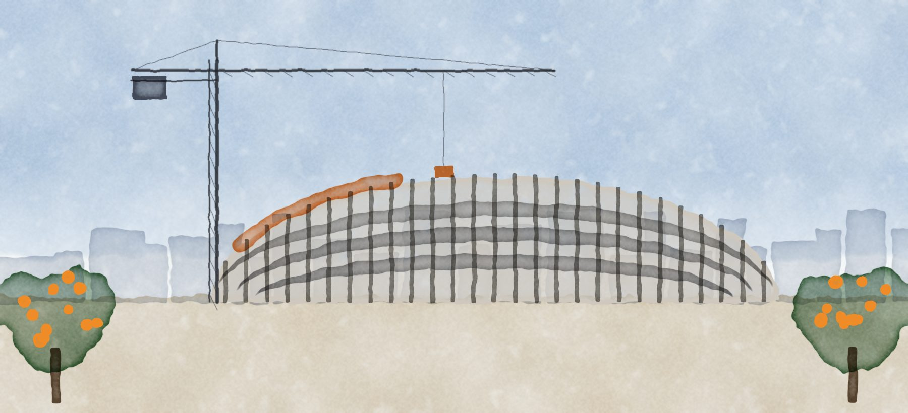
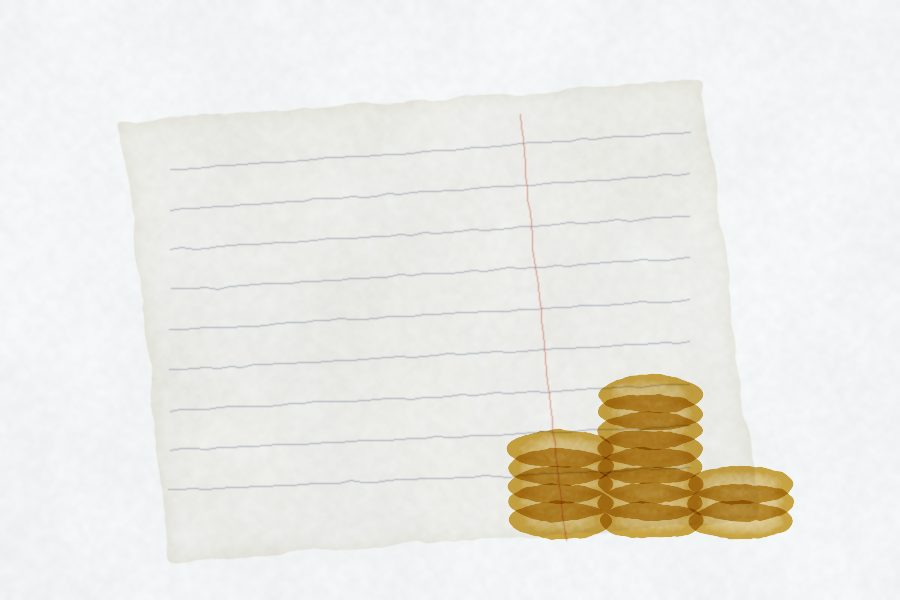
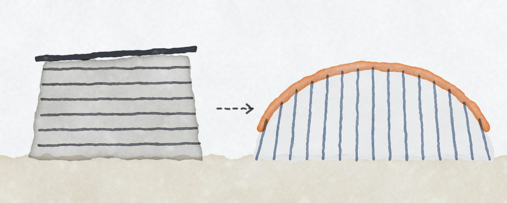

Lleno en la grada, apretado en la caja.
Un club con una afición enorme que no monetiza, que vive de una televisión que cae y de vender jugadores, con los salarios en el 81% de sus ingresos. Para construir su estadio dejó la TV en prenda y vendió hasta 2052 lo que el estadio va a generar. Es una apuesta que puede transformarlo, pero solo funciona si sigue en Primera, si la obra llega a tiempo y si el dueño lo sigue sosteniendo.

La tesis en cuatro números
La cuenta de resultados, línea por línea
Una cuenta de pérdidas y ganancias se lee como una cascada: los ingresos arriba y cada línea que baja les quita o les suma algo hasta llegar al resultado. No importan los números sueltos, sino qué se come cada uno del ingreso.
Cambia de temporada y quita las ventas de jugadores o la reversión del estadio para ver el negocio sin esas ayudas.
Al quitar una línea no se recalculan los impuestos; es una aproximación para ver el tamaño del hueco. El presupuesto 25/26 junta ventas y deterioros en una sola línea.
Tres años en cuatro gráficas
En 23/24 parecía que el club se estaba arreglando. En 24/25 los salarios se dispararon, la TV siguió cayendo y los intereses subieron. El resultado final se ve igual porque vendieron más jugadores: el problema de fondo empeoró y quedó tapado por las ventas.
Barras rayadas: presupuesto LFP 2025/26, no un resultado real. Las cuentas 2025/26 se publican hacia noviembre de 2026.
De dónde entra el dinero
Millones de euros por temporada.
La televisión es más de la mitad de lo que ingresa el Valencia, y cae tres años seguidos: 67,8 → 60,1 → 53,2 M. El comercial está estancado y la tienda es pequeña.

Contra el promedio de LaLiga
En 22/23 LaLiga sumó las cuentas de todos sus clubes como si fueran uno solo. Comparado con ese promedio, el Valencia depende mucho más de la TV y genera muy poco comercial. Ese hueco comercial es, probablemente, su mayor espacio para crecer.
El promedio está inflado por Real Madrid y Barcelona, sobre todo en comercial. Por eso el siguiente paso es comparar con clubes parecidos.
% de los ingresos.
Cómo se reparte la TV de LaLiga
Real Decreto-ley 5/2015, art. 5. Posiciones de la gráfica de LaLiga. BOE ·
Por qué la TV no se recupera rápido
La mitad se reparte a partes iguales. Un 25% depende de la implantación social: un tercio por abonos y taquilla, dos tercios por audiencia. El otro 25% depende de los resultados de las últimas cinco temporadas, y la más reciente pesa un 35%.
Es un promedio móvil: un mal año castiga durante cinco. Además, el acuerdo de LaLiga con el fondo CVC reduce la TV a cambio de dinero adelantado, y parte de ese dinero va al estadio.
Demanda de sobra, monetización baja
Mestalla está casi lleno. El club no puede crecer consiguiendo más aficionados; solo puede crecer cobrando más por aficionado. Y para eso necesita un producto que hoy no tiene: palcos, hospitalidad, servicios.
Datos de afición del club. Precios medios calculados: ingresos ÷ unidades. Tottenham: Matchday Finance fuente externa
¿Y si cobrara más por aficionado?
Simulación ilustrativa: 43.640 asistentes × 19 partidos de liga en casa × ingreso medio. Hoy el promedio implícito es ≈ 27 € por asistente y partido. No incluye copas ni eventos.
La lección del Tottenham
En su última temporada en White Hart Lane, el Tottenham ingresó 45,3 M £ por día de partido. Con el estadio nuevo pasó de 42 M £ en 2014 a 118 M £ en 2023, sobre todo por hospitalidad y palcos.
Pero llegó al estadio siendo rentable y con deuda barata, a ≈3%. El Valencia llega con deuda cara, salarios al 81% y el 37% de sus ingresos comprometido. El estadio puede ser la solución, pero el punto de partida es mucho más frágil.
Fuentes externas: Charles Richards, The Bottom Line, Matchday Finance.
La cuenta dice «equilibrio». La caja dice «apretado».
El beneficio no es dinero en el banco. Devolver un préstamo no aparece en la cuenta de resultados, y una reversión contable suma beneficio sin meter un euro. Por eso se lee también el estado de flujos de efectivo.
23/24: un club que ingresa 107 M terminó el año con 1,7 M en el banco. Pidió 26,1 M a los bancos para devolver 27,1 M: no pagaba su deuda, la refinanciaba.
24/25: el día a día consumió 27,3 M. La caja saltó a 213 M, pero 180,4 M son del fondo del estadio y están obligados a ir a la obra. La caja propia rondaba los 33 M.
22/23: el día a día consumió 28,4 M. Se salvaron con 73 M cobrados por ventas, 34,5 M prestados por el dueño y 17,7 M de ampliación de capital.
| Flujos (M€) | 23/24 | 24/25 |
|---|---|---|
| A · Explotación | −3,9 | −27,3 |
| B · Inversión | −5,3 | −31,2 |
| C · Financiación | −1,0 | +269,9 |
| Emisión de deuda | 26,1 | 471,3 |
| Devolución | −27,1 | −201,3 |
| Caja al cierre | 1,7 | 213,2 |
La deuda cambió de forma, no de tamaño
Casi todos los clubes tienen deuda. Lo que importa es para qué la usas, cuánto pesa frente a lo que ingresas, cuánto cuesta y a quién se la debes.
Junio de 2024. Deuda neta de 283,5 M, unas 2,7 veces los ingresos. Seis préstamos que vencían entre 2026 y 2029, con Mestalla hipotecado.
31 de octubre de 2024. Una financiación corporativa de 121,3 M con aseguradoras y fondos de pensiones, al 6,6% y vencimiento medio de 7,5 años, más un puente de 65 M de Goldman Sachs. Con eso pagaron a CaixaBank, Rights and Media Funding y un Profit Sharing Agreement de 61 M, y liberaron la hipoteca de Mestalla.
El puente se pagó con dinero del fondo del estadio. Parte de la operación del Nou Mestalla terminó pagando deuda vieja, no ladrillos.
Los pasivos financieros a largo plazo pasaron de 175 M a 471 M en un año. El tipo medio con bancos fue del 7,3% en 24/25, frente al 6% del año anterior.

Contra lo que se considera sano
EBITDA = resultado de explotación + amortización. Deuda neta / EBITDA con datos de 23/24 (283,5 ÷ 29,0). Cobertura con datos de 24/25 (36,4 ÷ 22,4). Los ratios que exigen los prestamistas (covenants) no son públicos; la nota solo dice que se cumplieron al cierre. cálculo propio
Quién le presta al Valencia (junio 2025)
| Acreedor | M€ | Coste | Hasta |
|---|---|---|---|
| Bonos del fondo Nou Mestalla | 237,0 | 5,82% fijo | 2052 |
| Financiación corporativa | 121,3 | 6,6% | ≈2034 |
| Crédito del fondo | 85,0 21,25 dispuesto | Euribor + 3,5% | ≈2030 |
| Préstamo participativo LaLiga (CVC) | 64,0 | — | — |
| Empresas del grupo (dueño) | 40,2 | — | 2030 |
¿De quién es cada euro?
Hay dos deudas distintas con dos acreedores distintos, y cada una tiene su garantía. El fondo del estadio no puede tocar la TV; los prestamistas corporativos no cobran del estadio. Se conectan de forma indirecta: si el estadio rinde poco, el club tiene menos caja y le cuesta más cumplir los ratios del préstamo corporativo.
Cedido al fondo hasta 2052
Bonistas y crédito del fondo, gestionado por BEKA Titulización
- Entradas y taquilla de ambos estadios
- Hospitality y palcos
- Naming del estadio
- Eventos y alquileres
- Hipoteca de hasta 300 M sobre el Nou Mestalla
En prenda
Aseguradoras y fondos de pensiones de la financiación corporativa
- Todos los derechos audiovisuales (TV)
- Las ayudas al descenso
- Los contratos comerciales relevantes
- Además, hay que cumplir ratios financieros
Libre
Lo que no aparece comprometido en las notas
- Venta de jugadores
- Tienda oficial (no se menciona)
Por eso el club depende tanto de vender: es de los pocos ingresos sin otro dueño delante.
Ingresos de 24/25 según quién tiene derecho sobre ellos (M€)
Aproximación: se asume que competiciones y abonos entran en los ingresos del estadio cedidos al fondo, que es lo que sugiere la nota 1.3 sin desglosarlo. Comercial y publicidad se asigna a la prenda por los «contratos comerciales relevantes». asignación propia
El Nou Mestalla: la apuesta
El club vendió los ingresos futuros de sus estadios a un fondo creado para esto. Los inversores no confiarían en el Valencia, pero sí en las rentas de un estadio. El fondo retiene cada año lo necesario para pagar su deuda y el resto va al club, desde el primer año que el estadio opere.

Simulador: ¿cuánto le queda al club?
Cuota estimada de los bonos: 237 M al 5,82% amortizados en ≈25 años ≈ 18,2 M/año; antes de 2028, solo intereses ≈ 13,8 M. Crédito: 85 M a ≈5,5% ≈ 4,7 M/año, a pagar con la venta de Mestalla. Hoy, abonos y competiciones suman ≈ 26 M. cálculo propio
Calendario
Fondo de titulización
237 M en bonos a 28 años al 5,82% fijo, más un crédito de 85 M. Los bonos empiezan a devolver capital en septiembre de 2028.
Préstamo de LaLiga (CVC)
80 M destinados al estadio. Ya se pagaron 26,5 M por adelantado a la constructora FCC con ese dinero.
Edificio comercial
Venta de una parcela terciaria junto al estadio, sujeta a condiciones. Parte irá al fondo para cubrir contingencias de la obra.
Lo prometido contra lo que pasó
El presupuesto se presenta a LaLiga, que con él fija cuánto puede gastar el club en plantilla. Cada euro de beneficio presupuestado es un euro que no se gasta en el equipo, así que los clubes presupuestan a cero. Lo importante es qué línea hace cuadrar ese cero.
El presupuesto usa definiciones de LaLiga y la cuenta las contables, así que las líneas no son idénticas.
El resultado «se cumplió»: 0 previsto, +0,3 M real. Pero el gasto en personal se pasó en unos 20 M y la deuda costó 8 M más. El club lo explica por el despido del entrenador y por fichajes para cubrir lesiones largas.
El hueco se tapó con más ventas y con la reversión del estadio.
Para 25/26 presupuestaron 37,2 M en ventas de jugadores desde el inicio para cuadrar a cero, con personal en ≈ 86% de los ingresos. En vez de controlar el gasto, presupuestan vender más.
La reversión de 16,8 M
Mientras la obra estuvo parada, el club rebajó su valor en libros. En 24/25, con licencia, plan urbanístico y contrato con FCC, un tasador independiente la revaluó y el club deshizo parte del castigo: +16,8 M de beneficio en papel, sin un euro de caja. Sin ella, 24/25 habría sido una pérdida de unos 16,5 M.
¿Casualidad que quede justo en positivo? Hubo hechos reales que la justifican y no revirtieron todo, pero es un número de criterio. El auditor lo marcó como el aspecto más delicado de las cuentas.
Deterioro acumulado del Nou Mestalla en libros (M€).
Las reglas y el auditor
La regla del resultado del fútbol
LaLiga no mira la pérdida contable de un año, sino la suma de varias temporadas de un «resultado del fútbol» que excluye algunos gastos. En Primera se permite un déficit de hasta 5 M; más, si el dueño lo cubre con capital. Si un club la incumple, LaLiga le recorta el límite de plantilla y no puede inscribir fichajes.
En 24/25 el Valencia tuvo déficit (−3,4 M) y pasó gracias al superávit de 23/24. Si 25/26 fue deficitaria, ese colchón sale de la ventana.
Ingresos menos gastos relevantes según el reglamento de LaLiga (M€).
Los números son fiables
El auditor dice que las cuentas expresan la imagen fiel del grupo, sin salvedades.
La valoración del estadio
«valores estimados y otras variables con alto nivel de incertidumbre»
Se revisó con especialistas en valoración inmobiliaria. El segundo aspecto es la refinanciación y sus derivados.
Depende del dueño
Fondo de maniobra negativo de 19,9 M (−94,3 M un año antes). La continuidad se apoya en el compromiso formal del accionista mayoritario de dar apoyo financiero.
Tres riesgos conectados
Cada uno empeora a los otros dos. Esta es la base para las tres decisiones del memo de presidente.
Descender
Que no llegue a tiempo
Que el dueño se canse
Lo que aprendí a leer
El orden para abrir unas cuentas anuales en España: balance, cuenta de pérdidas y ganancias, cambios en el patrimonio, flujos de efectivo y memoria. Para la cuenta de resultados, de abajo hacia arriba y luego de arriba hacia abajo.
La última línea. ¿Ganó o perdió? Ese es el titular; lo demás lo explica.
Explotación (el negocio), financiero (la deuda), antes de impuestos.
Cuánto entra y de dónde. ¿Cuál es el más grande, cuál sube, cuál baja?
Dos o tres líneas, cada una dividida entre los ingresos.
Venta de jugadores, deterioros, otros resultados. ¿Cómo queda sin eso?
Cada cambio grande es una pregunta, y la respuesta está en su nota.
Glosario
Fe de erratas
Lo que dije mal durante el análisis y cómo quedó corregido al leer las notas.
Fuentes y evidencia
Los documentos completos y cada recorte que usamos, con la página o nota de donde salió.
| Documento | Lo que sacamos | Enlace |
|---|
Recortes de los documentos
Lo que sigue
Se guarda en este navegador.